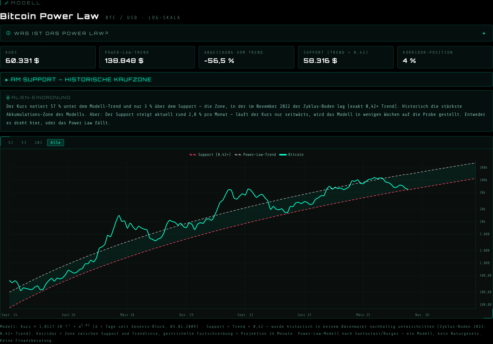
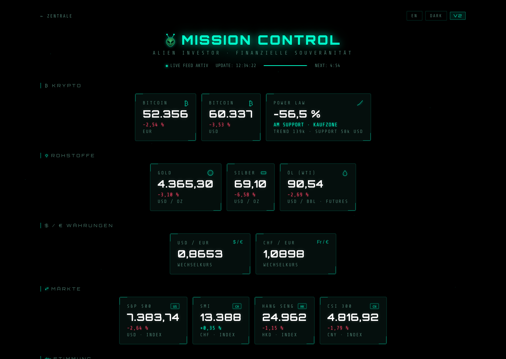

Der Bitcoin-Kurs notiert gut die Hälfte unter seinem Allzeithoch von 126.080 $. Die Timeline ist voll mit Crashpropheten und Hopium, je nach Lager. Beides ist Lärm. Es gibt aber ein Modell, das auf dieselbe Frage eine messbare Antwort gibt: das Power Law. Und seine Antwort ist gerade bemerkenswert konkret. Der Kurs sitzt fast exakt auf der Linie, die seit 2011 jeden einzelnen Bärenmarkt-Boden gehalten hat.
Was ist das Power Law?
Trägt man den Bitcoin-Kurs auf einer doppelt-logarithmischen Skala gegen die Zeit seit dem Genesis-Block auf (3. Januar 2009), liegt er seit über 15 Jahren erstaunlich nah an einer Geraden. Eine Gerade im Log-Log-Diagramm bedeutet: Der Kurs wächst nach einem Potenzgesetz, englisch Power Law. Nicht exponentiell, sondern mit der Zeit abflachend, aber stetig.
Die verbreitete Kalibrierung des Modells, popularisiert vom Physiker Giovanni Santostasi:
Kurs ≈ 1,0117·10⁻¹⁷ × d5,82 (d = Tage seit dem Genesis-Block)
Die gängige Erklärung dahinter: Bitcoin wächst wie ein Netzwerk. Mehr Nutzer machen das Netzwerk wertvoller, der höhere Wert zieht neue Nutzer an. Solche Rückkopplungen erzeugen in vielen Systemen Potenzgesetze, von Städten bis zu sozialen Netzwerken. Ob die Erklärung stimmt, ist offen. Dass die Kurve bisher passt, ist messbar.
Der Korridor: Trend und Support
Aus der Formel ergeben sich zwei Linien, die zusammen den Power-Law-Korridor bilden:
- Trendlinie: der faire Wert laut Modell. Der Kurs pendelt in Zyklen um diese Linie, mal weit darüber, mal deutlich darunter.
- Support: Trendlinie × 0,42. Kein Bärenmarkt-Boden hat diese Linie bisher nachhaltig unterschritten. Der Zyklus-Boden im November 2022 (rund 15.700 $) lag exakt auf 0,42× Trend.
Eine feste obere Begrenzung gibt es bewusst nicht. Die Zyklus-Spitzen rücken von Zyklus zu Zyklus näher an die Trendlinie heran, eine verlässliche Resistance-Gerade existiert schlicht nicht:
| Zyklus-Top | Kurs im Verhältnis zur Trendlinie |
|---|---|
| Dezember 2017 | 6,8× über Trend |
| November 2021 | 2,9× über Trend |
| 2025 (ATH 126.080 $) | 1,2× über Trend |
Diese Konvergenz ist selbst eine Beobachtung wert: Die Euphorie-Ausschläge werden kleiner, der Kurs schmiegt sich zunehmend an das Modell. Falls das anhält, deutet es auf abnehmende Volatilität hin. Bitcoin reift.
Wo der Kurs heute steht
Stand 6. Juni 2026, Tag 6.363 seit dem Genesis-Block:
- Kurs: rund 60.300 $
- Power-Law-Trend: 138.848 $ (Kurs liegt 56,5 % darunter)
- Support: 58.316 $ (Kurs liegt nur noch wenige Prozent darüber)
- Korridor-Position: 4 % (0 % = Support, 100 % = Trendlinie)

Der neue Power-Law-Chart auf alien-investor.org: Kurs (grün), Trendlinie (weiß gestrichelt), Support (rot gestrichelt). Status: AM SUPPORT.
Übersetzt: Der Kurs notiert in der Zone, in der im November 2022 der letzte große Boden lag. Historisch war genau hier die stärkste Akkumulations-Zone des Modells. Jeder, der in dieser Zone gekauft hat, lag rückblickend richtig. Bisher.
Der Haken: Der Support wartet nicht
Was viele übersehen: Die Support-Linie ist keine horizontale Marke wie ein klassisches Chart-Level. Sie steigt mit, aktuell rund 2,8 % pro Monat, etwa 38 % pro Jahr. Das hat eine unbequeme Konsequenz: Es gibt kein gemütliches Entlangschleifen am Boden. Läuft der Kurs nur wenige Wochen seitwärts, holt der Support ihn ein.
Damit steht das Modell vor seinem härtesten Test seit 2022. Entweder der Kurs dreht in dieser Zone nach oben, wie in jedem Zyklus zuvor. Oder das Power Law wird in den kommenden Monaten live falsifiziert.
Was das Modell nicht kann
Das Power Law ist eine statistische Beobachtung über rund 6.400 Tage, kein Naturgesetz. Drei Dinge gehören zur ehrlichen Einordnung:
- Der Exponent hängt vom Datenfenster ab. Neuere Schätzungen liegen eher bei ~5,7 als bei 5,82. Das Modell ist eine Kurvenanpassung, keine Herleitung.
- Es kennt keine Schocks. Regulierung, Makro-Krisen, schwarze Schwäne: all das steht in keiner Formel.
- Ein Bruch des Supports wäre kein Kaufsignal. Er würde schlicht bedeuten, dass das Modell falsch war. Nicht, dass der Kurs zurückkommen muss.
Wer das Modell als Garantie liest, hat es nicht verstanden. Wer es als Landkarte für die Einordnung nutzt, bekommt etwas Seltenes: einen nüchternen Maßstab in einem Markt, der von Stimmungen lebt.
Selbst nachschauen: live und kostenlos
Genau dafür gibt es das Power-Law-Modell jetzt als festen Bestandteil der Alien-Investor-Tools. Ohne Anmeldung, ohne Tracking, live berechnet bei jedem Aufruf:
- Der Power-Law-Chart: Kurs seit 2014 auf Log-Skala, Trendlinie, Support, Korridor und eine Projektion 24 Monate in die Zukunft. Dazu eine aufklappbare Erklärung des Modells und eine automatische Alien-Einordnung, die sich der aktuellen Lage anpasst.
- Mission Control: die Power-Law-Karte direkt im Dashboard, neben Kursen, Fear & Greed und Märkten.

Mission Control mit der neuen Power-Law-Karte: Abweichung vom Trend, Verdict und die wichtigsten Modellwerte auf einen Blick.
Beide Tools sind zweisprachig (DE/EN umschaltbar) und zeigen immer den aktuellen Stand. Die Zahlen in diesem Artikel sind eine Momentaufnahme vom 6. Juni 2026. Was der Korridor heute sagt, siehst du dort.
Fazit
Ist der Boden erreicht? Das Power Law sagt: Wenn das Modell weiter gilt, dann ja, ungefähr hier. Die Zone, in der der Kurs gerade notiert, war historisch der Ort, an dem Bärenmärkte endeten. Gleichzeitig steigt der Support Monat für Monat weiter und lässt dem Kurs wenig Zeit für Unentschlossenheit.
Die ehrliche Antwort lautet also: Der Modell-Boden ist so gut wie erreicht. Ob es der tatsächliche Boden ist, entscheidet der Markt in den nächsten Wochen. So oder so liefert der Korridor das, was Stimmungen nie liefern: einen überprüfbaren Maßstab.
Modelle sind Landkarten, keine Verträge. Aber wer ohne Landkarte unterwegs ist, folgt am Ende der Stimmung der Anderen.
Weiterführend
- Wie ich den Bitcoin-Kurs bewerte — Modelle und Kennzahlen im Überblick
- Self Custody: Warum Bitcoin ohne eigene Schlüssel seinen Sinn verliert
- Bisq: Bitcoin kaufen ohne KYC — die dezentrale Alternative zu Börsen
- Bitcoin ohne KYC 2026 — der vollständige Überblick
Tools für echte Eigentümer
-
📖 GrapheneOS: Android im Überwachungszeitalter
Einrichtung, Apps & digitale Souveränität — das komplette Handbuch für dein Google-freies Android. DRM-frei.
alien-investor.org/buecher.html · auch auf Amazon KDP -
Privacy & Mail: E-Mail, VPN und Cloud ohne Big Tech — Proton.
alien-investor.org/proton -
₿ Bitcoin in Selbstverwahrung: Hardware-Wallet statt Börsenkonto. Code
ALIENINVESTOR= 5 % Rabatt auf die BitBox.
alien-investor.org/bitbox -
₿ Bitcoin kaufen (Europa): Bitcoin-only, kein Shitcoin-Lärm. Code
ALIENINVESTOR= dauerhaft −0,2 Prozentpunkte Gebühren.
alien-investor.org/21bitcoin